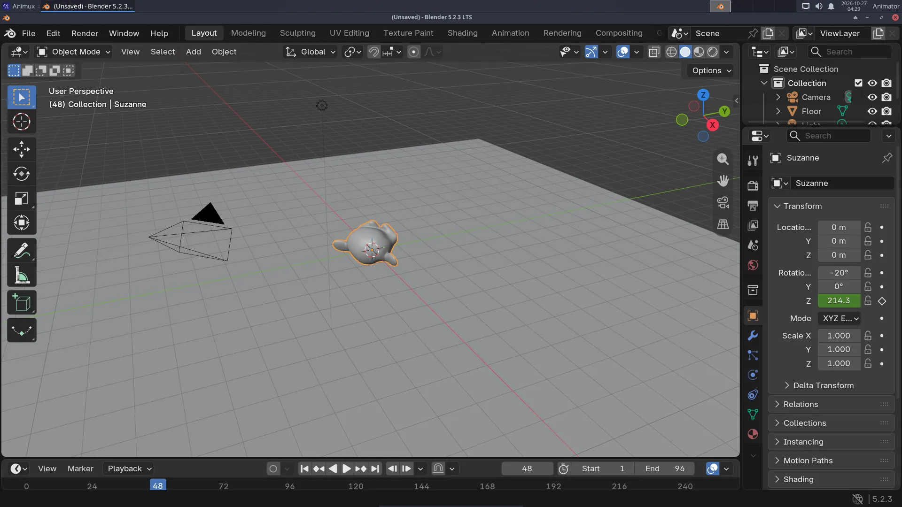
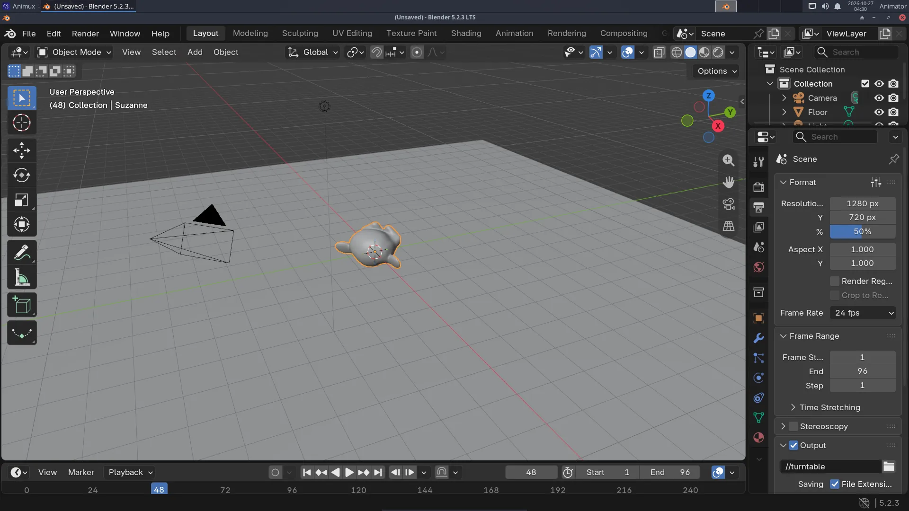

A turntable shows a model from every side: it turns once around. Studios use turntables to present models. You need the scene from Your first 3D render (or download first-render.blend).
This is the result (4 seconds, 24 frames per second):
The finished file: turntable.blend.
Keyframes, in one sentence#
You tell Blender where an object is at a few moments (keyframes), and Blender calculates every frame in between.
1. Set the length#
At the bottom, in the Timeline, set Start to 1 and End to 96. At 24 frames per second that is 4 seconds.
2. First keyframe: frame 1#
- Make sure the current frame (the blue number in the timeline) is 1.
- Select Suzanne. In the Object tab of Properties (orange square), look at Rotation Z.
- Hover the mouse over the Rotation Z field and press I. The field turns yellow: it has a keyframe on this frame. A diamond appears in the timeline.
3. Second keyframe: one turn later#
- Type
97in the current-frame box of the timeline (one frame after the end, so the loop has no repeated frame). - In Rotation Z, add 360 to the number that is there (for example
40becomes400) and press Enter. - Hover over the field and press I again.


Press Space to play. Suzanne turns, but she starts slowly, speeds up and slows down again ("ease in, ease out"). For a turntable the speed must be even:
- Move the mouse over the timeline, press A (select all keyframes), then T and choose Linear.
Play again with Space: an even, endless spin. Press Space to stop.
4. Render to a video file#
- Open the Output tab (the printer icon).
- Under Output, set the path to
//turntable(//means "in the same folder as the .blend file"). - Set the File Format to FFmpeg Video (in Blender 5 first choose the media type Video).
- Under Encoding: Container
MPEG-4, Video CodecH.264, Output QualityMedium quality.


- Lower the Max Samples in the Render tab to
16to make it faster. 96 frames take a while. - Render → Render Animation (Ctrl+F12). Blender renders frame after frame. When it is finished, the file
turntable0001-0096.mp4is next to your.blendfile. - Watch it: double-click it in the file manager (it opens in VLC), or Render → View Animation in Blender.
Image sequences are safer
For real projects, render to PNG images instead of a video (File Format PNG, path //frames/turntable_). If Blender stops at frame 60, you keep frames 1–59 and continue from 60. Join the images into a video with FFmpeg or Kdenlive afterwards (how).
Render without opening Blender#
Close Blender and render from a terminal; it is faster and you can keep working:
blender -b ~/Projects/turntable.blend -a
Next#
- Animate other properties the same way: location (a jumping ball), scale, colour (hover over any field and press I).
- A character with MakeHuman.